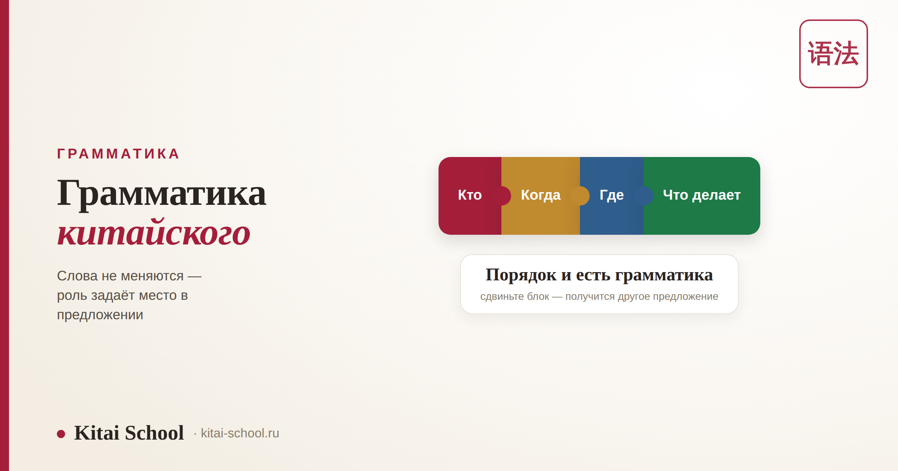
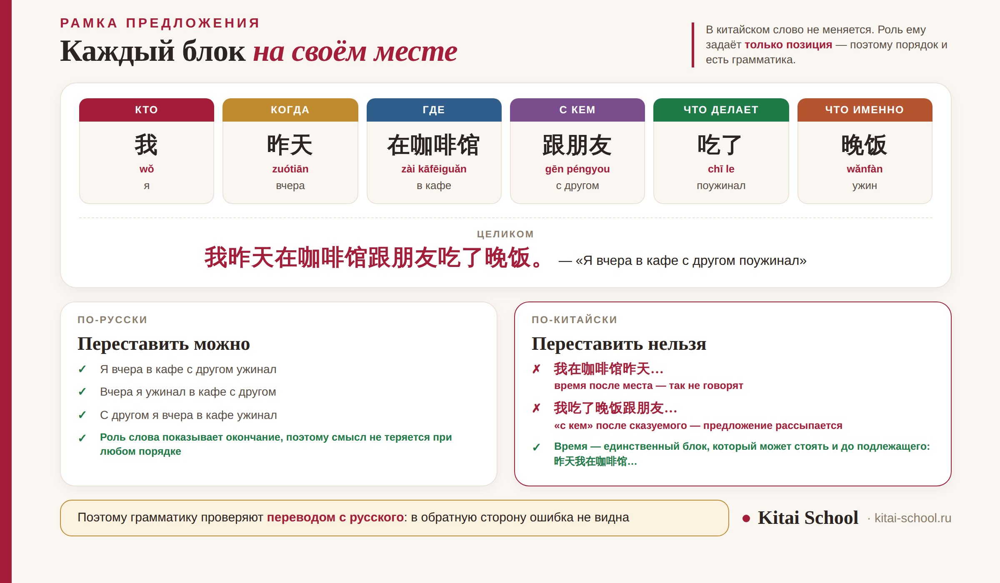

Грамматика
Курс по грамматике китайского языка: как устроен порядок слов и что должно быть в программе


Курсы грамматики легко перепутать: в описании у всех примерно одно и то же. Разница видна по одному признаку — учит ли программа собирать предложение или только объясняет правила. Чтобы этот признак заметить, полезно понимать, как китайская грамматика устроена. Разберём это, а потом — по каким пяти вещам видно рабочий курс.
В китайском нет падежей, родов и спряжений — но роль слова задаёт его место в предложении. Отсюда жёсткая рамка: кто, когда, где, как, что делает, что именно. Русская привычка свободно переставлять слова мешает дольше всего, поэтому грамматику проверяют не пересказом правила, а переводом с русского. Темы дают от рамки к деталям, а не наоборот. И главный признак слабого курса: объяснение 了 как «прошедшего времени».
Что такое грамматика в языке без окончаний
Первое, что снимает страх: заучивать формы не придётся вообще. Слово в китайском не меняется — ни по падежам, ни по родам, ни по лицам.
| В русском | В китайском |
|---|---|
| окончание: «друг» — «другу» — «другом» | слово не меняется никогда |
| порядок слов свободный | порядок слов задаёт смысл |
| время — форма глагола | время — отдельные слова: «вчера», «уже» |
| формы нужно заучивать | заучивать формы не нужно |
Отсюда вывод, который меняет подход к занятиям. Выучить китайскую грамматику — это не запомнить таблицы, а научиться ставить слова на нужные места. А значит, и проверяться она должна не вопросом «расскажите правило», а задачей «соберите предложение».
Почему словарь без грамматики не помогает говорить
Логика кажется убедительной: наберу слов побольше, а сложить их как-нибудь смогу. С китайским это не работает, и вот почему.
| Ожидание | Что получается на самом деле |
|---|---|
| «Меня поймут, просто будет коряво» | слово на чужом месте меняет роль — выходит другое предложение |
| «Соберу по смыслу» | смысл собеседник достраивает по порядку слов, а не по вашему замыслу |
| «Главное — знать слова» | известное слово в неверной позиции узнаётся хуже незнакомого |
| «Сначала схема, потом объём» | тот же словарь начинает работать без единого нового слова |
Это не значит, что лексика не нужна: без неё говорить не о чем. Значит другое — порядок важнее объёма на старте. Тысяча слов без схемы даёт меньше, чем триста слов со схемой. Про соотношение этапов мы писали в разборе этапы изучения китайского, а про то, что в китайском действительно трудно, — в статье сложно ли учить китайский с нуля.
Рамка предложения: почему порядок нельзя менять
У китайского предложения есть скелет, и смысловые блоки стоят в нём по местам. Это и есть та самая грамматика, ради которой идут на курс.
Русское «я вчера в кафе с другом ужинал» переставляется как угодно и остаётся понятным. Китайское — нет: сдвиньте блок, и вы получите либо другое предложение, либо набор слов. Честная оговорка: время может стоять и перед подлежащим, это нормально. А вот место, способ и дополнение своих мест не меняют.

Практический вывод для выбора курса. Если рамку дают на первом же занятии и потом возвращаются к ней при каждой новой теме — программа выстроена правильно. Если схему не показывают вообще, а темы идут списком правил, ученик будет собирать предложения наугад и удивляться, почему его не понимают.
Ко мне пришёл студент с очень приличным словарём: читал новости, знал около полутора тысяч слов. А говорить не мог совсем — точнее, говорил, но его переспрашивали через фразу.
Оказалось, он собирал китайские предложения по русской схеме: сначала глагол, потом обстоятельства, потом уточнения — как удобно. Каждое слово в отдельности было верным, а предложение целиком собеседник не узнавал.
Мы отложили новые слова на месяц и занимались одним: переводили с русского на китайский по схеме, по десять коротких предложений в день. Через месяц словарь остался тем же, а речь стала понятной. Это, пожалуй, самый быстрый результат, который я видела в работе со взрослыми.
В каком порядке дают темы: от рамки к деталям
Хорошая программа движется от общего скелета к уточнениям, а не наоборот. Ниже типичная последовательность — по ней удобно сверять содержание курса.
| Ступень | Что осваивают | Зачем это здесь |
|---|---|---|
| 1. Рамка | базовый порядок слов, простое предложение, отрицание, вопрос | без неё всё остальное собирается наугад |
| 2. Уточнения | счётные слова, определения, притяжательность | предложение обрастает подробностями |
| 3. Служебные слова | показатели завершённости и опыта, направление действия | появляется время и вид, но не через формы глагола |
| 4. Смена акцента | конструкции, которые переносят фокус на объект или на обстоятельство | речь перестаёт быть однообразной |
| 5. Сложное предложение | союзы, придаточные, длинные высказывания | берётся последним, когда рамка уже автоматическая |
Порядок здесь не формальность. Курс, который берётся за сложные конструкции раньше, чем ученик перестал думать над базовым порядком слов, тратит время впустую: получается красивая конструкция с ошибкой в самой простой её части. Как грамматика ложится на уровни экзамена, видно в разборах HSK 3 и HSK 4.
Пять признаков курса, который учит строить, а не пересказывать
Всё это спрашивается до оплаты и проверяется на пробном занятии.
| Признак | Как проверить |
|---|---|
| Схему дают сразу | на первом занятии показывают рамку предложения, а не список правил |
| Отрабатывают переводом с русского | именно здесь вылезает ошибка порядка: с китайского на русский она незаметна |
| Служебные слова объясняют через ситуации | не «это прошедшее время», а «что именно этот показатель говорит о действии» |
| Возвращаются к пройденному | новая тема встраивается в старую рамку, а не живёт отдельным правилом |
| Проверяют речью, а не тестом | просят составить предложение вслух, а не выбрать вариант из четырёх |
И один признак, по которому курс отсеивается сразу. Если 了 объясняют как «прошедшее время» — программа упрощает там, где нельзя. В китайском нет времён в привычном смысле, а этот показатель говорит о завершённости и об изменении ситуации; он спокойно встречается и там, где речь о будущем. Объяснение «это прошедшее» экономит полчаса урока и создаёт ошибку, которую потом переучивают годами.
Что уже разобрано в блоге
Отдельные темы, которые чаще всего спрашивают, у нас разложены подробно — по ним удобно проверить, понятно ли объясняют на курсе.
| Тема | Что внутри |
|---|---|
| частица 吗 | как из утверждения получается вопрос и когда частицу ставить нельзя |
| конструктор вопросов | главное правило: слово-вопрос стоит на месте ответа |
| раздельно-сочетаемые глаголы | глаголы, которые разрываются, и куда прячется показатель |
| двойное отрицание | конструкции с двумя отрицаниями и ловушки перевода в лоб |
Заодно стоит посмотреть, как устроена вторая половина системы — письменность: логика знаков разобрана в статье про курсы по иероглифике. А общая картина старта, где грамматика стоит третьим этапом, — в разборе изучение китайского с нуля.
Частые вопросы (FAQ)
Что такое грамматика в китайском, если там нет окончаний?
Это порядок слов и служебные слова. В русском роль слова видна по окончанию, поэтому предложение можно перестроить почти как угодно. В китайском слово не меняется вообще, и роль ему задаёт только место в предложении плюс маленькие служебные слова рядом. Отсюда простой вывод: выучить китайскую грамматику значит не запомнить таблицы форм, а научиться ставить слова на нужные места.
Правда ли, что китайская грамматика простая?
Простая по устройству и непривычная в применении. Нет падежей, родов, чисел и спряжений — заучивать формы не нужно, и это огромное облегчение. Но появляется жёсткая рамка предложения, в которой каждый смысловой блок стоит на своём месте, а привычка свободно переставлять слова мешает годами. Поэтому лёгкой считают теорию, а трудной — практику.
Почему я знаю много слов, но не могу говорить?
Потому что слова не складываются в предложение сами. Набор верных слов в неверном порядке — это не «акцент» и не «немного коряво»: собеседник слышит либо другое предложение, либо бессмыслицу. Обычно проблема не в объёме словаря, а в том, что не отработана схема: кто, когда, где, как, что делает, что именно. Как только схема становится автоматической, тот же словарь начинает работать.
В каком порядке проходят грамматические темы?
От рамки к деталям. Сначала базовый порядок слов и простое предложение, потом счётные слова и определения, дальше служебные частицы вроде 了, затем конструкции, меняющие акцент, и только после этого сложные предложения с несколькими частями. Программа, которая начинает со сложных конструкций до того, как автоматизирован порядок слов, тратит время: ученик собирает красивую конструкцию, но ошибается в самом простом.
Правда ли, что 了 — это прошедшее время?
Нет, и это самое частое заблуждение. В китайском вообще нет времён в привычном смысле: когда произошло действие, показывают словами вроде «вчера» и «уже». Служебное 了 говорит о завершённости или об изменении ситуации, и поставить его можно и там, где речь о будущем. Курс, который объясняет 了 как «прошедшее время», экономит полчаса на объяснении и создаёт ошибку на годы.
Можно ли выучить грамматику самостоятельно?
Разбор правил — да, отработку — частично. Правило можно прочитать и понять за вечер, упражнения с ответами тоже прекрасно делаются самому. Не работает без обратной связи одно: собственная спонтанная речь. В ней ошибка в порядке слов не заметна изнутри, потому что вы слышите свой замысел, а не своё предложение. Разумная схема — разбирать и отрабатывать самому, а речь показывать преподавателю.
У нас грамматику дают схемой и сразу отрабатывают переводом с русского — так ошибка в порядке слов видна на первом же занятии. Приходите на бесплатный пробный урок: посмотрим, как вы собираете предложение сейчас, и покажем, что поправить в первую очередь.
Или напишите слово ГРАММАТИКА нашему менеджеру в Telegram — подберём формат под ваш уровень.
Дальше по теме: частица 吗; конструктор вопросов; раздельно-сочетаемые глаголы; двойное отрицание; порядок этапов — этапы изучения китайского; что трудно на самом деле — сложно ли учить китайский с нуля; с чего начать — изучение китайского с нуля; письменность — курсы по иероглифике; как устроен урок в группе — групповые занятия; занятия — индивидуальные уроки.
Источники
- Практика Kitai School — преподавание грамматики взрослым и разбор типичных ошибок русскоязычных студентов.
- Учебные материалы, привязанные к уровням HSK: последовательность грамматических тем по ступеням.
- Официальный сайт экзамена chinesetest.cn — требования уровней HSK.
Соберите схему — и слова начнут работать. 加油！